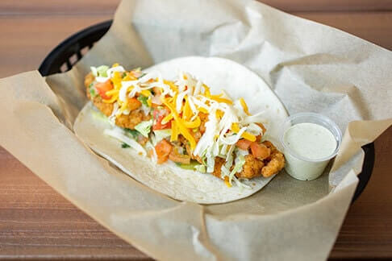
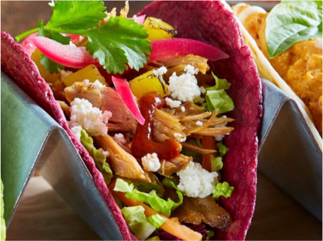
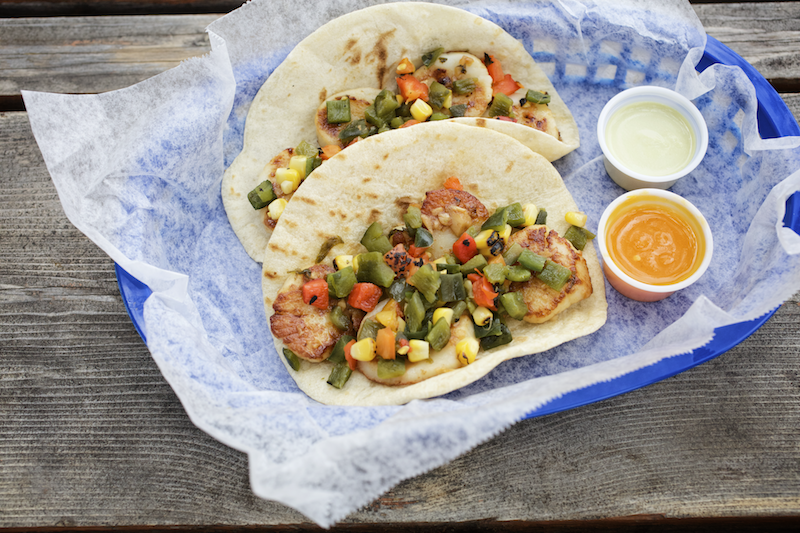

Taco Tour Around Dallas
If you're new to Dallas, checkout Big D one taco at a time!
Torchy's Tacos
Torchy's has everything that you want in a taco with a laid back flair. My personal favorite is the Trailer Park Trashy on flour, but I'm always tempted to try the taco of the month. Be prepared for their super spicy diablo sauce.

Find your inner Diablo here!
Blue Mesa
Moving both east and south of the Preston Hollow Torchy's location, you will find all things Southwestern at Blue Mesa. Located near North Park Mall, Blue Mesa removes the Tex out of tacos and adds a little South By Southwest in a taco kind of way!
 More Blue Mesa Madness!
More Blue Mesa Madness!
Velvet Taco
Moving along I-75 South, you will notice Velvet Taco as you approach the M Streets area. You guessed it! This Dallas neighborhood is made up of street names that mostly begin with an 'M'. Velvet Taco takes quite a bit of liberty with the untraditional taco. Best known for their chicken and waffle taco, these tacos are worthy of a visit.

More Bougie Tacos Here!
Fuel City Taco Stand
Driving further South on I-75, you will find Fuel City. Don't be misled! This gas station also has some of the best tacos in town!
 For more Texas Taco Stand Feels!
For more Texas Taco Stand Feels!
Taco Deli
An import from Austin, you can find all things delish at Taco Deli. Swinging west to Sylvan, you can find one of their two Dallas locations!

Welcome Taco Deli to Dallas!